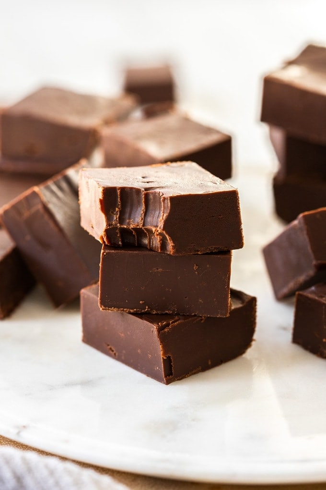

Chocolate Fudge

Ingredients
- 1 can sweetened condensed milk (395g / 14oz)
- 450 g dark (50-70%) chocolate, finely chopped
- 113 g unsalted butter (½ cup / 1 stick / 4oz)
- ½ teaspoon vanilla
- ¼ teaspoon sea salt (optional)
Steps
- Start by chopping good chocolate, really small then add it to a
heavy-based saucepan alongwith sweetened condensed milk and unsalted butter
- Stir the mixture over low heat until it’s smooth and just starts to bubble
(it should have thickened quite a bit)
- Stir through the vanilla and salt,
then pour it into a lined 8×8 inch square baking tin and let it set.